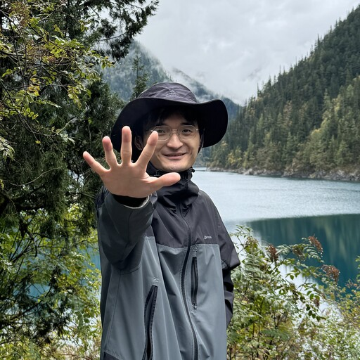
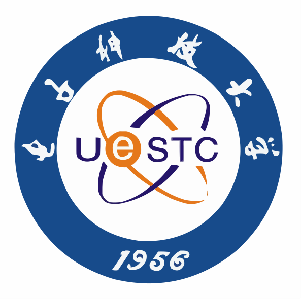
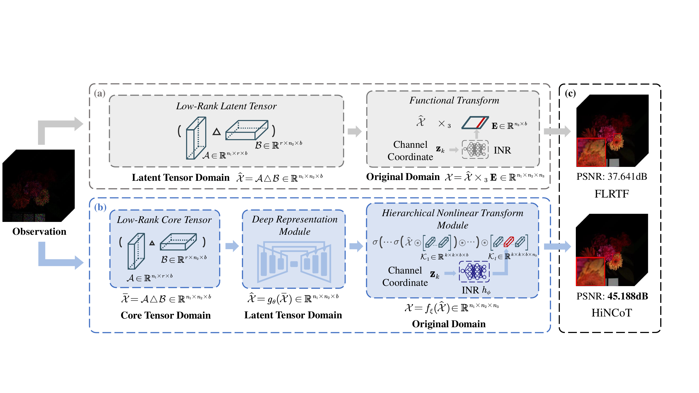
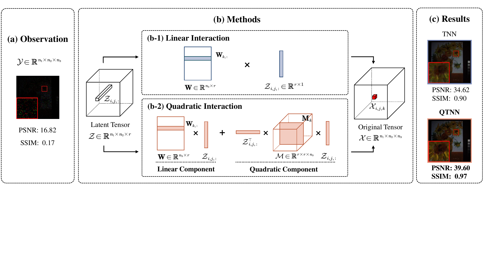

PhD student at UESTC
I am a PhD student at the School of Mathematical Sciences, University of Electronic Science and Technology of China (UESTC), advised by Prof. Xile Zhao and Prof. Tingzhu Huang. I received my B.S. degree in the School of Mathematics and Statistics, Liaoning University (LNU) in 2024.

My research focuses on mathematical methods for image and multi-dimensional data processing:

PhD student, Mathematics (successive master–doctoral program) — School of Mathematical Sciences, University of Electronic Science and Technology of China (UESTC), Chengdu.
